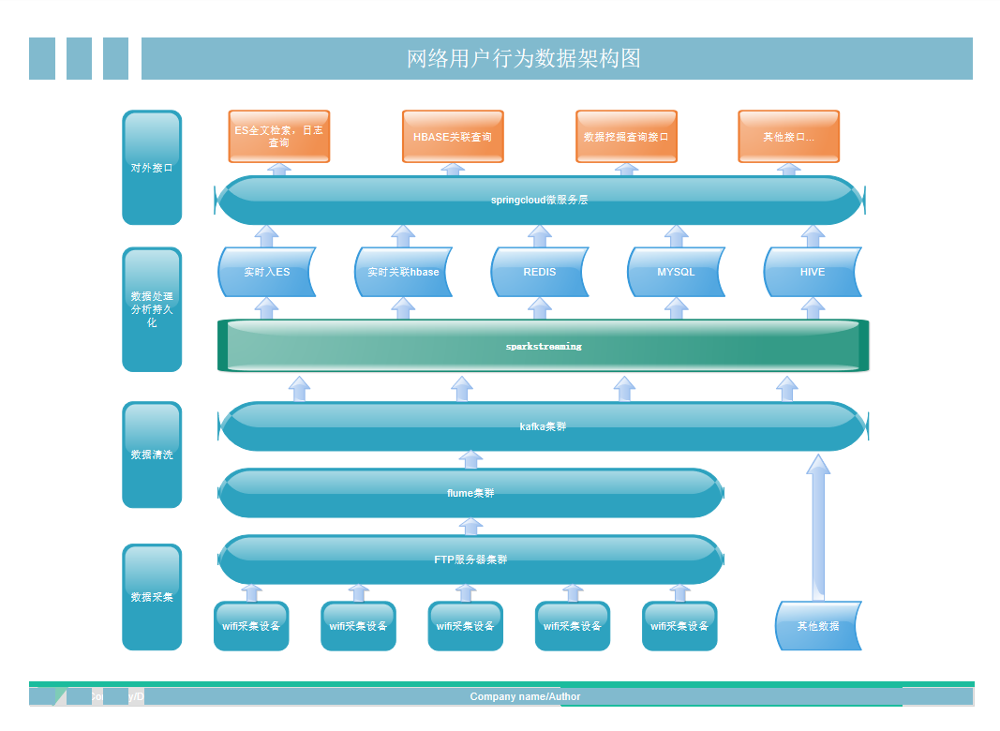
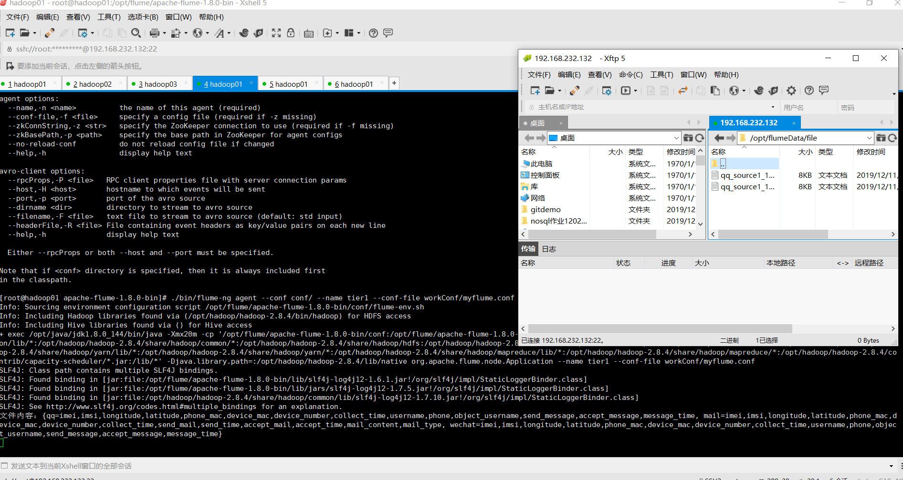

一、项目介绍：
数据源通过采集到ftp集群(可选),由flume监控实时采集数据到kafka,在flume做了数据的预处理 (数据效验，错误数据转存es),由kafka对接es,hbase,redis,mysql,hive,存储在hive中做离线的 数据挖掘接口，在es中做全文索引，日志查询，并利用hbase做二级索引对es查询做了优化，mysql 和redis结合做实时预警，在mysql中添加相应的预警规则，由数据实时流入redis并与mysql的预警规则做对比。
示例: http://www.bjhcns.com/index.php?m=content&c=index&a=show&catid=3&id=92
1.应用：数据源在wifi数据时：
1) 网络泄密
通过邮件内容，传输文件内容，传输图像分析，红头文件分析等，搜索关键词2) 网络安全
木马网站规则分析，攻击流量统计分析，网站访问次数预警（一段时间内访问一个网站的频率）3) 刑事案件分析
涉黄，涉毒分析（通过统计浏览非法网站频率和时间 内容判断，包括搜索内容）4) 反恐分析
外籍人口聚集等5) 定位，抓捕
通过WIFI数据分析嫌疑人行动轨迹分析，轨迹伴随等数据源是日志文件或者后台数据时：
1)系统资源预警
2)日志实时搜索分析
2.功能流程：数据源通过采集到ftp集群(可选),由flume监控实时采集数据到kafka,在flume做了数据的预处理 (数据效验，错误数据转存es),由kafka对接es,hbase,redis,mysql,hive,存储在hive中做离线的 数据挖掘接口，在es中做全文索引，日志查询，并利用hbase做二级索引对es查询做了优化，mysql 和redis结合做实时预警，在mysql中添加相应的预警规则，由数据实时流入redis并与mysql的预警规则做对比。
二、系统架构：

三、Flume集群对接kafka集群：

四、es实时查询接口：